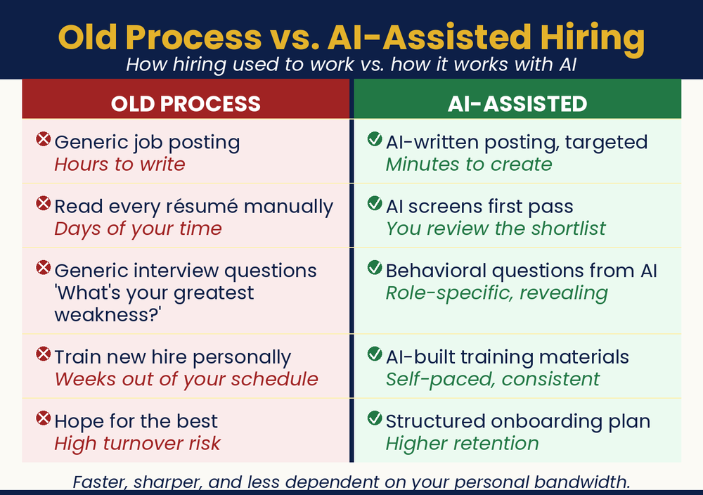

Chapter 13: Hire Smarter, Train Faster
Build a Better Team in Less Time
How do I find good people and get them up to speed without it taking over my life?

Chapter Recap
Hiring and training eat up time you do not have. AI helps at every step. It can write a clear job post, build fair interview questions, and screen resumes. Once someone is hired, it can create a welcome letter and a first-week plan. This chapter walks through all of it. You build a better team faster, and new people get up to speed sooner. Have formal HR documents checked by an attorney.
Note: These are starting points, not legal documents. Employment and contract law vary by place. Have any formal document reviewed by a qualified attorney before you use it.
In This Chapter
- Writing Job Postings That Attract the Right People
- Preparing for Interviews
- Your One-Hour Employee Onboarding Packet
- Creating Your Training Library
- Using AI for Performance Conversations
- Retention: The Hire You Don’t Have to Make
- Judgment Calls
Grab-and-Go Prompts
1. Write a Job Posting: honest, specific, no buzzwords
You are an experienced recruiter who specializes in small businesses. Write a compelling job posting for a [position] at my [type of business]. Key responsibilities: [list 3–4]. Ideal candidate traits and qualifications: [describe]. Our culture in a few words: [describe]. Be specific and honest about what the job is actually like, including the hard parts.
2. Screen a Resume: structure your evaluation
You are a senior HR professional with extensive experience evaluating candidates for small business roles. Here is the job description: [paste]. Here is the candidate’s resume: [paste]. How well does this candidate match the role requirements? List their three strongest qualifications and their two biggest gaps. Suggest three interview questions to probe the gaps.
3. Generate Interview Questions: behavioral and situational
You are an expert interviewer who helps small business owners hire reliable, self-directed employees. Generate twelve interview questions for a [position] at a small business. Include behavioral questions, situational questions, and questions that reveal how someone handles ambiguity and works without close supervision.
4. Draft a Welcome Letter: warm, one page, real
You are an HR consultant who writes onboarding communications for small businesses. Draft a warm, genuine welcome letter for a new employee joining my [business type] as a [position]. Make them feel valued and excited. Our culture: [2–3 sentences]. Their first week will look like: [describe]. Keep it to one page.
5. Build a Role Overview: what the job is and how success is measured
You are an operations consultant who specializes in small business documentation. Create a one-page role overview for a [position] at my [business type]. Include: the role’s main purpose; key daily and weekly responsibilities; who they report to and work with; how success is measured in the first 30, 60, and 90 days.
6. Build a First-Week Plan: day by day
You are an onboarding specialist who designs practical first-week plans for small businesses. Build a day-by-day schedule for the first week of a new [position] at my [business type]. Balance structured orientation with shadowing time. Include specific tasks for each day, with time for questions.
7. Create a New-Employee FAQ: the ten things a new hire needs
You are an HR consultant who has onboarded hundreds of employees at small businesses. Create a new employee FAQ for my [business type]. Here is how we operate: [paste key policies, procedures, and workplace norms]. Format it as a Q&A covering the ten things a new hire would most want to know in their first week.
8. Turn Know-How Into Training: document a process
You are a training documentation specialist. Convert this informal explanation into a clear, step-by-step training document that a new employee could follow independently. Do NOT add steps or procedures I haven’t described. Keep it practical and in plain English.
9. Prep a Performance Conversation: direct and fair
You are an experienced manager and HR coach who specializes in constructive performance conversations at small businesses. Help me prepare for a conversation with an employee about [describe the issue clearly]. I want to be direct and fair, not punitive. Outline what to say and how to open the conversation.
10. Write Stay-Interview Questions: keep good people
You are an HR consultant for small businesses. Write eight stay-interview questions for a [role] at my [type of business]. Keep them friendly, open-ended, and easy to answer honestly.
Download
- 📄 New Hire Onboarding Pack: four ready-to-customize documents for every new hire.
- 📄 Interview Question Library: structured interview questions organized by role type.
Your Move
Write your top job posting right now using the AI prompt above. Even if you’re not hiring today, having a strong posting ready saves you days when the moment comes. Then spend thirty minutes building your New Hire FAQ using your knowledge of the most common questions new employees ask. That document will pay you back with every future hire.

Read the full chapter in
AI Jiu-Jitsu: Run Circles Around the Big Guys, the book this toolbox comes from.
Prefer to have it set up for you? BreakThru Growth offers AI coaching and done-for-you setup for small businesses → BreakThruGrowth.com